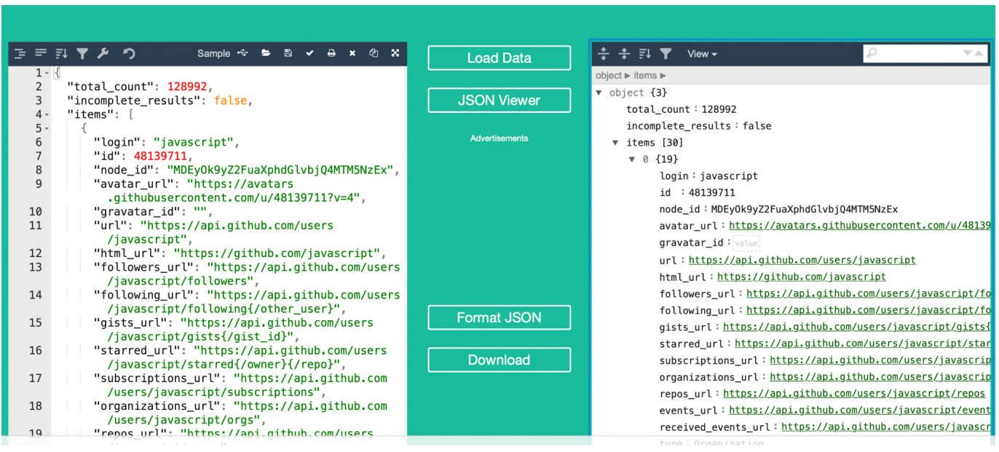
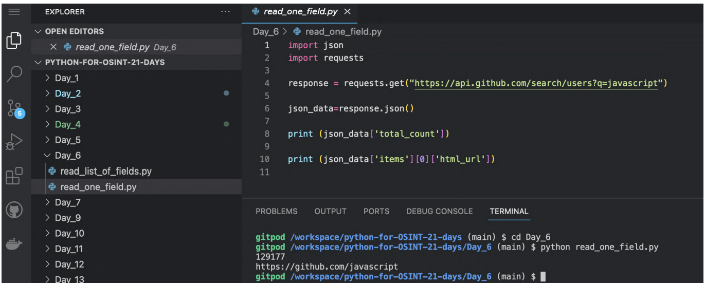
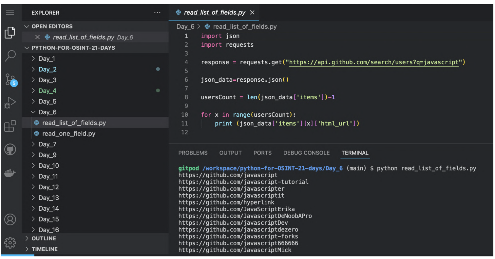
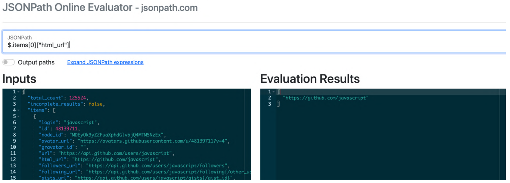

12 Dia 6 - JSON
No último capítulo conversamos sobre o fato de muitos dados úteis para investigações podem ser obtidos através de APIs. Muitas delas retornam dados em formato JSON (JavaScript Object Notation), assim como CSV e XML (falaremos destes formatos em outros capítulos).
No capítulo anterior também vimos muitos exemplos bons de dados JSON quando trabalhamos com a API do GitHub.

Na resposta da consulta, temos uma lista de 30 objetos (items[0], items[1], items[2] etc), cada um correspondendo a um usuário específico.
Cada objeto tem propriedades que armazenam informações sobre o usuário: login, html_url, id, flowers_url, etc.
Agora vamos tentar extrair dados de arquivos JSON usando código. O pacote JSON (https://docs.python.org/3/library/json.html) está disponível em Python por padrão e não requer instalação.
12.1 Lendo um campo
Rode read_one_field.py:

# Importa o módulo json e o requests
import json
import requests# Faz a mesma requisição para a API GitHub, feita no capítulo anterior
response = requests.get("https://api.github.com/search/users?q=javascript")# Atribui o variável o valor de resposta da consulta em formato json
Json_data = response.json()# Mostra como saída o número de resultados
print (json_data['total_count'])# Mostra como saída o primeiro perfil do GitHub
print (json_data['items'][0]['html_url'])Frequentemente precisaremos extrair não apenas um valor, mas informações sobre listas de objetos inteiras. Por exemplo, os links de perfis de usuários do GitHub extraidos no exemplo acima.
12.2 Lendo lista com muitos campos
Rode read_list_of_fields.py:

# Importa o módulo json e o requests
import json
import requests# Faz a mesma requisição para a API GitHub
response = requests.get("https://api.github.com/search/users?q=javascript")# Pega o resulto em formato json
json_data=response.json()# Conta o número de resultados
usersCount = len(json_data['items'])-1# Mostra na tela um link para cada resultado em uma estrutura de repetição
for x in range(usersCount):
print (json_data['items'][x]['html_url'])
Geralmente é complicado entender como marcar o caminho certo do dado em estruturas de arquivos JSON. Alguns serviços podem ajudar a descobrir isso, tais como https://jsonpath.com/ e https://jsonpathfinder.com/.
Antes de escrever algum código para processar arquivos JSON, lembre que algumas vezes é mais fácil converter para CSV e depois tirar as colunas que tem os dados que você precisa. Sugerimos este site para fazer isto: https://www.convertcsv.com/json-to-csv.htm.